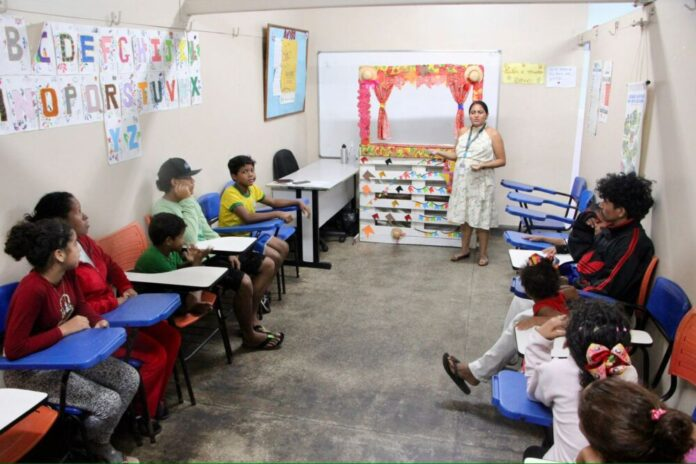
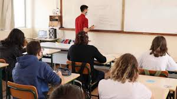

Projeto de Distribuição de Alimentos
Nosso projeto de distribuição de alimentos visa fornecer refeições nutritivas para famílias em situação de vulnerabilidade. Com a ajuda de doadores e voluntários, conseguimos alcançar centenas de pessoas a cada semana.

Projeto de Acolhimento e Suporte
Este projeto oferece suporte emocional e social para pessoas em situação de rua e famílias necessitadas. Através de grupos de apoio, oficinas e atividades comunitárias, buscamos promover a inclusão social e o bem-estar dessas pessoas.

Projeto de Educação e Capacitação
Nosso projeto de educação e capacitação oferece cursos e workshops para ajudar pessoas a desenvolverem habilidades que possam melhorar suas oportunidades de emprego e qualidade de vida. Desde alfabetização até treinamento profissional, estamos comprometidos em empoderar nossa comunidade.
